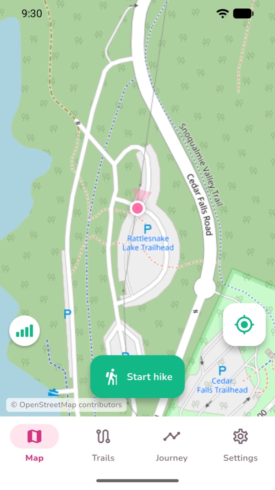
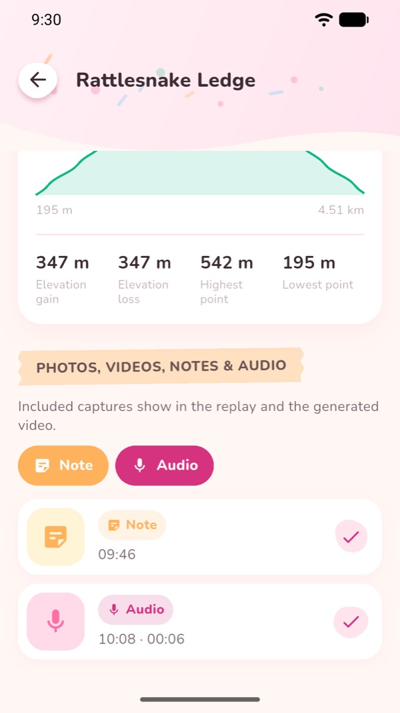
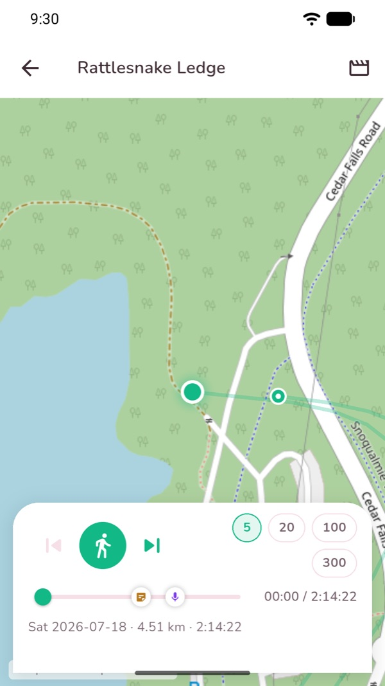
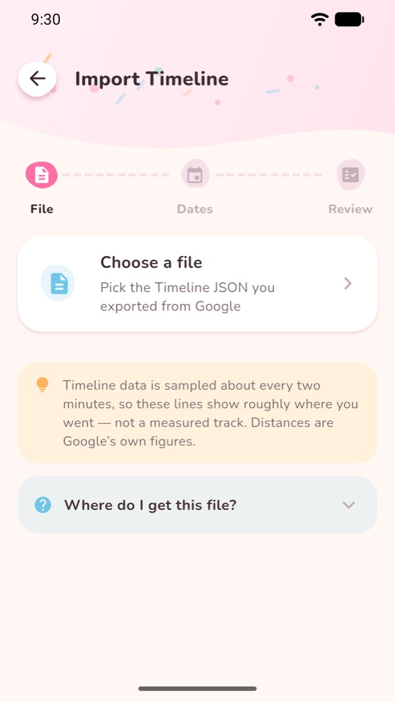
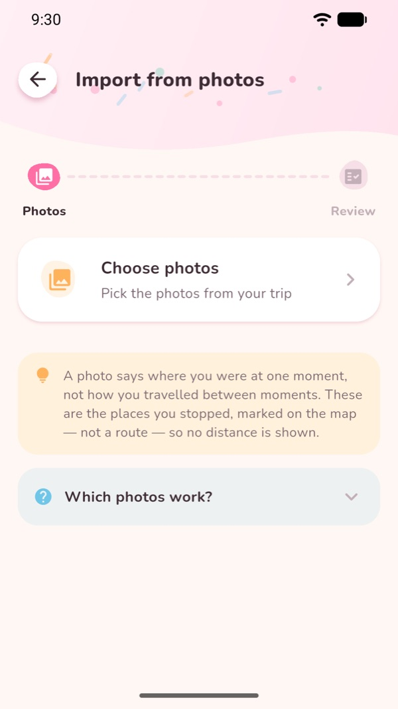
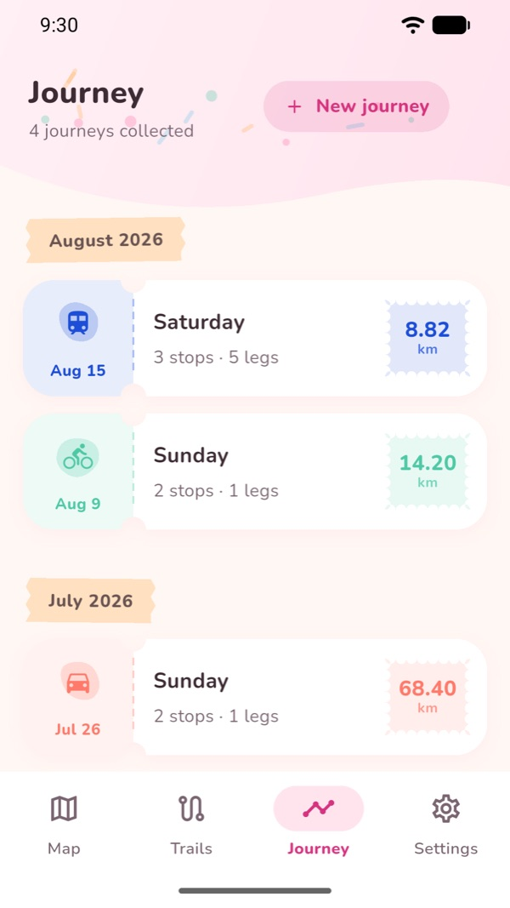
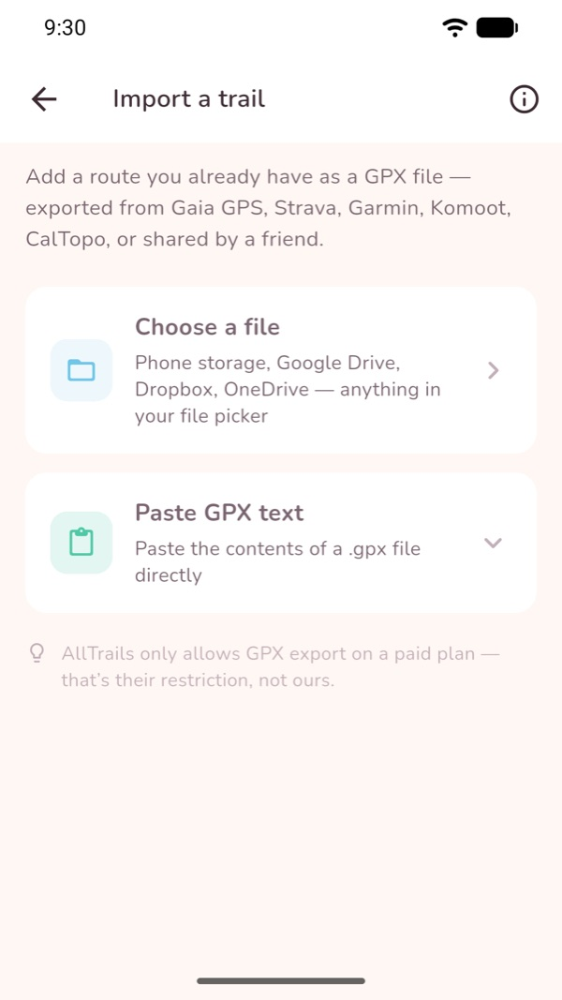

Momera GO
From where you go, to memory forever.
Momera GO keeps the places you have been. Record a hike as you walk it, or build a journey out of trips you have already taken — then watch any of them play back across the map, and keep it as a video.
Get it on Google Play No account · no sign-upWhat Momera GO does
Record a hike
GPS keeps running with the screen locked, the phone in your pocket and no signal for miles. Switch apps, or run out of battery — it offers to pick the hike back up where it stopped.
Keep the moments
Photos, videos, voice memos and notes, saved as you walk and pinned to the exact spot on your route.
Build a journey
Import your Google Maps Timeline, or pick geotagged photos from a trip. Either way you get a day you can follow on the map.
Watch it back
The route draws itself, your photos surface where they happened and your voice memos play as you reach them.
Keep it as a video
Export a hike replay as an MP4 — a cinematic fly-through of your day, saved to your gallery or shared anywhere. Android only.
Stays on your phone
No sign-up and no account to create. Your hikes, photos, notes and recordings never leave the device.
How to use it
Record a hike
Open the Map tab and tap Start hike. That is the whole setup — there is no activity to pick and nothing to configure first.
As you walk, the strip across the top shows elapsed time, distance, speed, elevation gain and steps. You can lock the screen and put the phone away; recording carries on in the background.
Tap Stop when you are done and the hike is saved to the Trails tab.

Add photos, videos, notes and voice memos
While a hike is running, three buttons sit on the map: camera, microphone and note.
Photos and videos are taken inside the app, so Momera GO never asks for access to your photo library. Each capture is stamped with the spot and the moment you took it.
Open the hike afterwards and every moment is listed, each with its own switch for whether it appears in the replay and in the exported video.

Watch the hike play back
Open a hike and tap Replay. The route draws itself from start to finish while the map follows along.
Your moments appear as markers on the timeline. As the replay reaches one, a photo slides in, a note opens, or a voice memo plays.
Drag the scrubber to move around, and use the speed buttons to skip through the slow parts.

Export the replay as a video
From the hike or the replay screen, choose to export. Momera GO records the replay into an MP4: a wide establishing shot, a fly-through that follows your route, then back out for the ending.
Set how long the fly-through runs in Settings → Replay video length (15 to 60 seconds), and how long photos and notes hold on screen.
The finished video saves to your gallery, or shares straight out of the app.
Video export is Android-only, and works for recorded hikes rather than journeys.

Build a journey from your Google Maps Timeline
First export your Timeline from Google Maps on the same phone: Google Maps → your profile picture → Your Timeline → the three-dot menu → Location & privacy settings → Export Timeline data. You get a Timeline.json file.
In Momera GO open the Journey tab, tap New journey and choose the Timeline option. Pick the file, choose a date range, and import.
Every day you travelled becomes its own journey, and each leg is drawn in the colour of how you got there — walking, cycling, driving, bus, subway, train, tram, ferry or flight.
A real export can be 90 MB or more. Momera GO streams it rather than loading it whole, so it stays responsive, shows real progress, and can be cancelled.

Build a journey from your photos
In the Journey tab choose New journey and pick the photo option, then select the pictures from a trip.
Momera GO reads the place and time stored inside each photo and joins them in order. It uses the system photo picker, so it needs no photo-library permission — it only ever sees the pictures you hand it, and reads their details rather than copying them.
Photos with no location — most screenshots, downloads, and anything that came through a messaging app — are counted and reported rather than quietly dropped.

Open, replay and export a journey
The Journey tab collects every day you have imported, grouped by month.
Open one for the map, the stops and legs, and a breakdown of how far you went by each kind of transport. Tap Play journey to watch the day travel across the map, naming each mode as it changes.
Every journey is a .geojson file you own. Export it and it opens in any mapping tool.

Bring your own routes in and out
From the Trails tab you can import a GPX from Gaia GPS, Strava, Garmin, Komoot or CalTopo — pick a file, pull one from a cloud drive, or paste the text straight in. Momera GO also opens .gpx files handed to it from Gmail, Drive or Files.
Open a trail and tap Start hike on this trail to follow it; the trail is drawn under your live route and you are told if you wander off it.
Hike Back turns the route you just walked into a route home. Any hike or trail exports as GPX.

Maps and offline use
Momera GO ships two basemaps — a street view and an outdoor view with terrain. Both are keyless, so there is no account and no API key for anyone.
Every map area you look at is kept on the phone, which means a place you browsed at home still draws at the trailhead with no signal. GPS recording itself never needs a connection.
To be precise about it: Momera GO caches the areas you have viewed. There is no bulk region download, so browse the area you are heading to before you lose signal.
Common questions
Do I need an account?
No. There is no sign-up, no login and no account to create. Open the app and start recording.
Does it work without a signal?
GPS recording never needs a connection. Map tiles do: any area you have looked at before is kept on the phone and keeps drawing offline, so it is worth browsing your route before you set out.
Where does my data go?
Nowhere. Hikes, photos, videos, notes and voice memos are stored on your phone. There is no cloud sync and no account. The app sends anonymous crash and diagnostic reports so faults can be fixed.
Does importing photos give the app my whole photo library?
No. It uses the system photo picker, so the app only ever receives the specific pictures you select. It reads their location and time rather than copying them, and holds no photo-library permission at all.
Is a journey the same as a recorded hike?
No, and the difference matters. Google's Timeline is sampled roughly every two minutes and has no altitude, so a journey shows where you went and how — never how far you actually walked. Distances shown are Google's own figures, and there is no pace or step count. A photo journey shows no distance at all. For a measured track, record a hike or import a GPX.
Can I export a journey as a video?
Not currently. Video export records a hike replay and is Android-only. Journeys can be replayed in the app and exported as GeoJSON.
Which languages does it speak?
English, 简体中文 and 繁體中文, with metric or imperial units.
Privacy
Momera GO stores your hikes, media and journeys on your device. Read the full privacy policy.